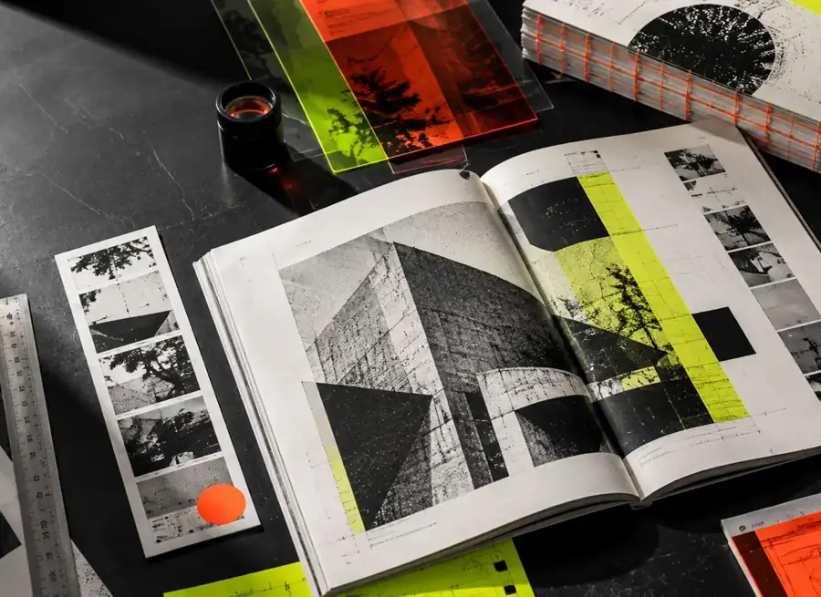
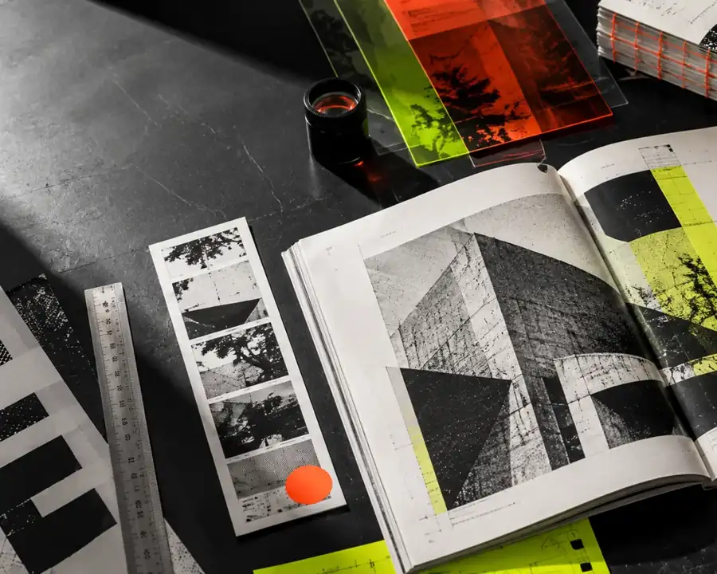
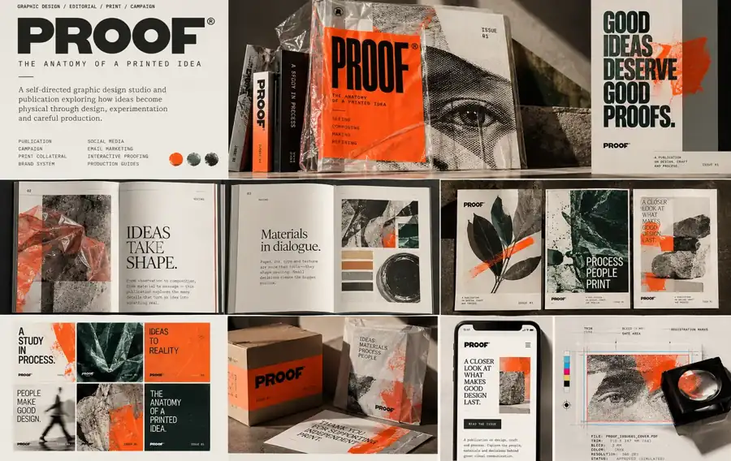
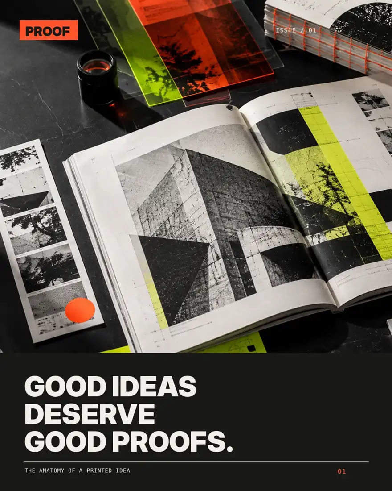
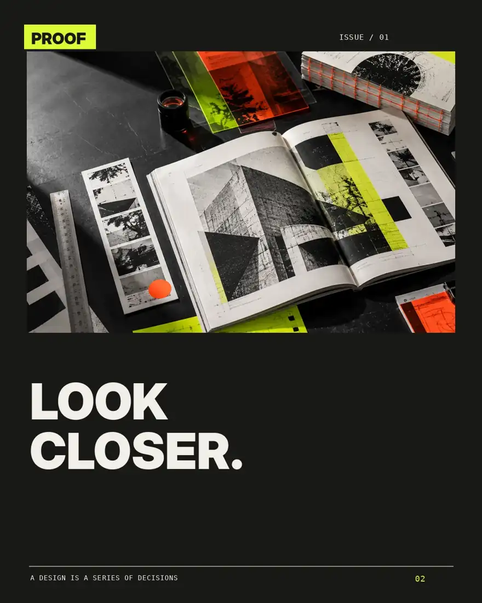
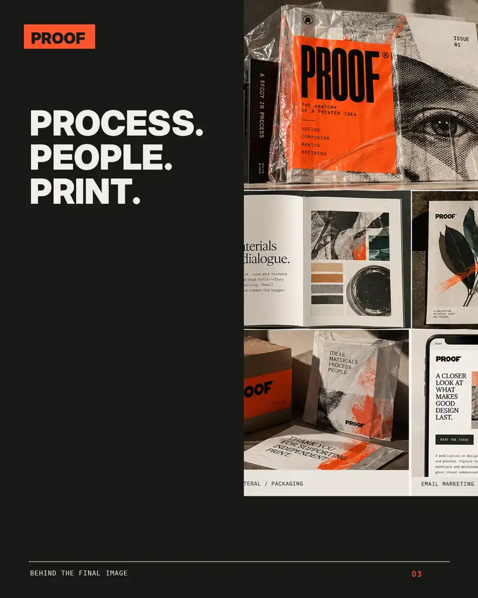
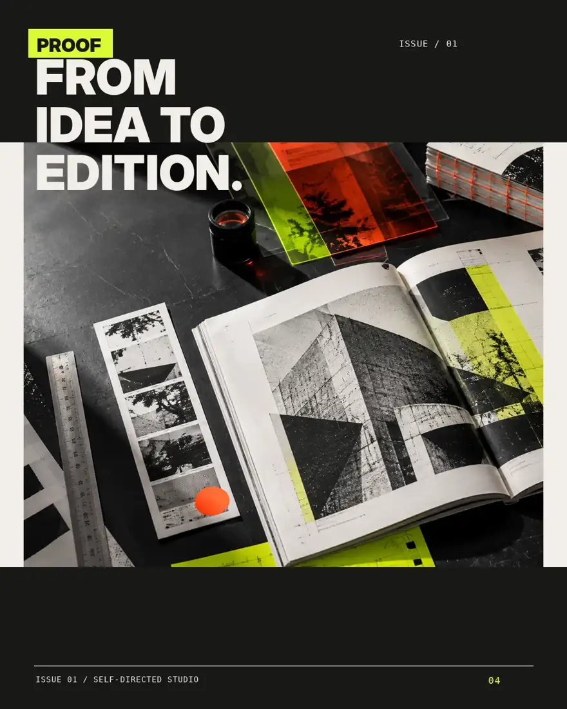
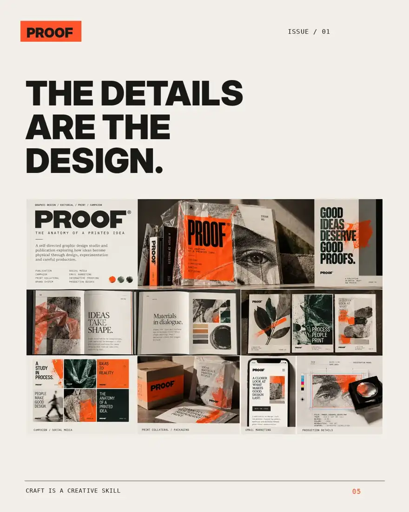
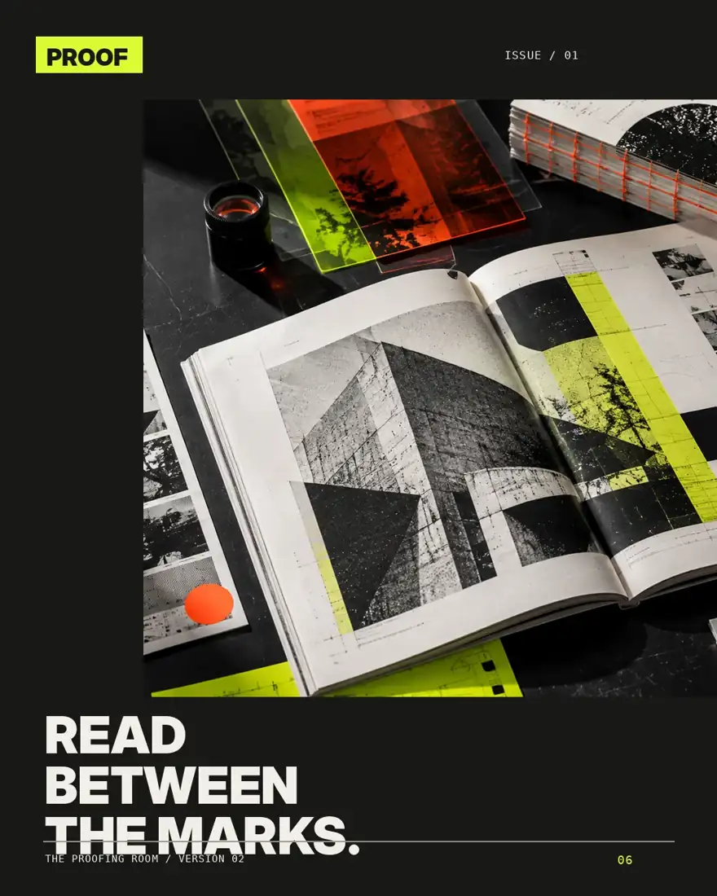
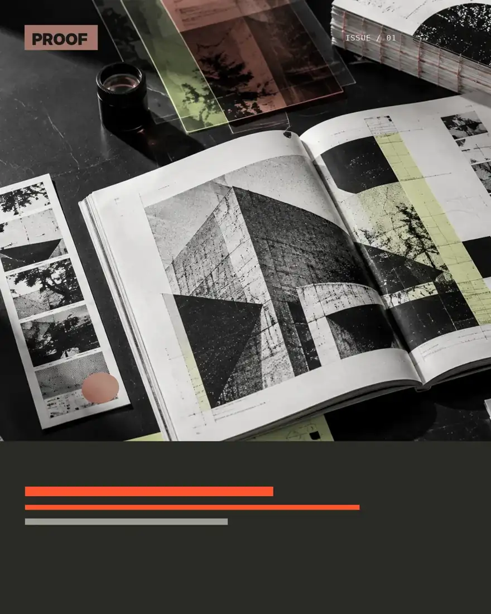

Precision meets interruption.
Registration marks, close crops, small metadata and layered color blocks create the tension between finished form and in-progress work.
Graphic design · Publication · Campaign · Production
Independent speculative work / 2026
The anatomy of a printed idea.
Design gets interesting between the first idea and the final file. PROOF explores the creative and technical decisions behind a graphic edition—with a publication, campaign and review tool designed as one system.

A publishing-led identity built to prove something practical: strong visual concepts should survive every format.
The brief is deliberately fictional. PROOF ISSUE 01 looks at design through four verbs—observe, compose, refine and release—and adapts the same content to a publication, social graphics, emails and print collateral.
Instead of another soft lifestyle identity or an application dashboard, the creative direction uses a sharp contact-sheet language: black, bone, orange, acid-yellow overlays, graphic annotations and photographed proof materials.
Registration marks, close crops, small metadata and layered color blocks create the tension between finished form and in-progress work.
Art-directed closeups and photographic material studies establish the visual world. Type follows a disciplined hierarchy rather than dominating every frame.
Format, revision, source and print-status details are included on real deliverables, not only described in decorative paragraphs.
An issue about the often invisible work inside visual communication.
Twelve original pages move from the first observation to composition, critique and production. The issue's typography and image language remain coherent even as page densities and reading rhythms change.
Open the complete publication PDF ↗
“The proof is where good ideas learn what they need to become.”
Four chapters. Twelve page compositions. Original sample editorial writing, physical-format design and a clear process narrative.


The photographs depict imagined design samples; they are not documentation of a physical printed edition. The PDF is a designed reading specimen, not a printer-approved imposed signature.
An identity that changes composition, not personality.
Campaign artwork is organized by communication purpose—announcement, edition detail, process, product overview and a review invitation. Each post has a different hierarchy within one unmistakable visual system.






Six editable-source photographic compositions plus a separate vertical story master.
VIEW STORY DESIGN ↗Two responsive live-text HTML emails with clear CTAs, image alternatives and plain-text fallback.
OPEN LAUNCH EMAIL ↗Documented messaging, channel dimensions and approvals to check before any real mailing or placement.
READ PRODUCTION NOTES ↗One identity, but never the same composition twice.
Two complete six-frame educational carousels, two vertical story compositions, four format-specific advertisements, and four fully coded responsive marketing emails take the PROOF idea into a more rigorous commercial-design system.
EXPLORE THE COMPLETE CAMPAIGN & FORMAT STUDIO ↗Good artwork still needs reliable file preparation, accurate copy and a controlled release process.
PROOF includes dimensioned sample advertising, technical copy and source/export notes. The format-specific creative changes across A5 advertising, A4 information sheets and digital assets.
This is an original fictional concept. The printed sample PDF has exact intended dimensions, while final stock, printer profile, physical proof and vendor approval remain unverified.
| Output | Designed size | Production status |
|---|---|---|
| Publication / Issue 01 | A5, 12 pages | Reader PDF; press layout and stock not validated |
| Promotional advertisement | A5 specimen | Example PDF; no actual printer approval |
| Social feed | 1080 × 1350 | Finished screen masters; placement QA pending |
| Marketing email | Fluid 600 px HTML | Working browser layouts; cross-client tests pending |
A designer should be able to show exactly what changed and why.
These controls demonstrate creative comparison and production-guide thinking. They are local portfolio interactions, not automatic preflight software or real client approvals.

Comparison is an illustrative treatment study—not a record of real client critique.
Check: vendor die · bleed · spot/CMYK conversions · font handling · legal copy · print proof. These are not verified commercial releases.
A design-studio case study treating publishing, institutional material and reading systems as connected disciplines.
See Studio Format ↗A strong reference for translating digital-print techniques into tactile visual storytelling across formats.
See Mohawk work ↗Research draws on referenced professional examples and Pinterest-inspired exploration of modern graphic design, without reusing copyrighted layouts or claiming a specific Pinterest board was fully reviewed. Generated photographic source and speculative print materials are disclosed throughout.